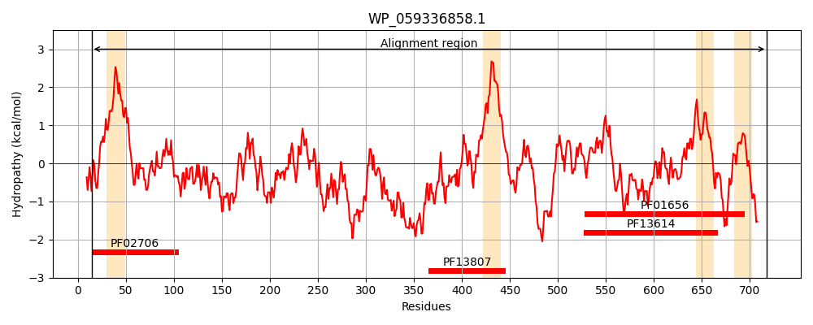
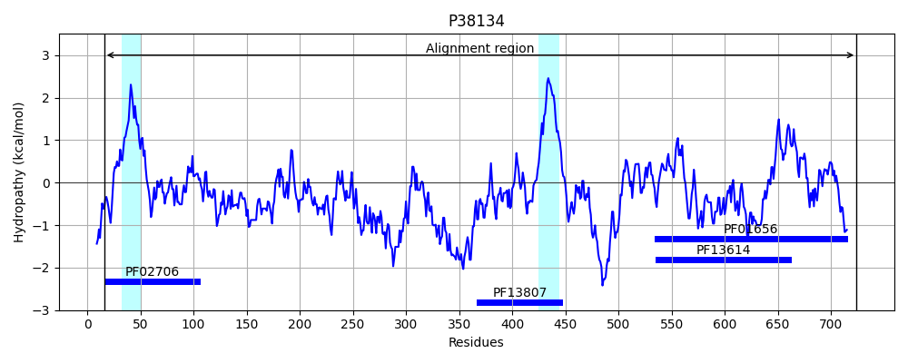
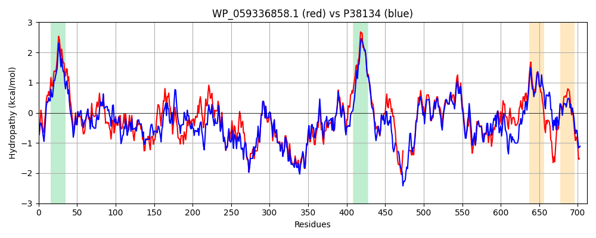

Hit Accession: P38134
Hit TCID: 8.A.3.3.1
Hit Description: gnl|BL_ORD_ID|10167 gnl|TC-DB|P38134|8.A.3.3.1 TYROSINE-PROTEIN KINASE ETK (EC 2.7.1.112) - Escherichia coli.
Mach Len: 712
e:0.000000
Query TMS Count : 4
Hit TMS Count: 2
TMS-Overlap Score: 1.950000
Predicted Substrates:None
BLAST Alignment:
Score: 2213 , Bit scores: 857 bits, E-value: 0.0e+00, Alignment length: 712, Percentage identity: 61
Query: 14 DEIDIGRIIGELIDHRKLIISVTALFTVLALVYALFATPIYKADALVQVEQKQGNAILSNLSQMLPNSQPMSAPEIALLQSRMILGKTVDDLNLQSKIEPKYFPIFGKGLSRLMGEKNGTLEITRLYIPRIDNEASELEIEVKDQSHYFVKYNNKVIEGTVGIAIDEEGVSLKVSEISAKPGSRFTVKYEDRLKAISDLQDVFTVADQGKDTGILTLSLTGDNPILIRKIVDSIAQNYLSQNIARQAAQDEKSLEFLNIQLPKVRKDLDIAEDTLNQYRRQKDSVDLSLEAKSVLEQIVNVDNQLNELTFRESEISQLYTKEHPTYKALLEKRKTLQDEKEKLNNKVSAMPKTQQEILRLSRDVESGQAVYMQLLNRQQELNIAKSSAIGNVRIIDTAITQTKPVKPKKILIVLIGVFLGFATSVGIVLLRVFLRRGIENPEQLEELGINVYASIPVSETFAKRMVQTPSWKKN-------RNKDTYGFLAIENPADLAIEAIRGLRTSLHFAMMEARNNVLMISGASPNAGKTFVSTNLAAIIAQAGKKVLLIDTDMRKGYTHKLFEVSNEYGLSDFLSGKNDLPKSVKKIKNVEFDFISRGVVPPNPAELLMHRRFGELITWASNNYDIVILDTPPILAVTDAAIIGHYAGTTLLIARFEQNTPKEIEVSYKRFEQSGVIVKGCILNGVVKKASSYYGYGYNHYGYSYKD 718
+EID+ R++GEL DHRK IISVTALFT++A+ Y+L +TPIY+AD LVQVEQKQGNAILS LS M+PNS P SAPEI LLQSRMILGKT+ +LNL+ +E KYFPI G+G +RL EK G L I+ ++IP+++ + +L + V + HY ++ + G VG ++++GV+L +++I AKPG++F + L+AI+ LQ+ FTV+++ K++G+L L++TGD+P LI +I++SIA NYL QNIARQAAQD +SLEFL QLP+VR +LD AE+ LN YR+Q+DSVDL+LEAK+VLEQIVNVDNQLNELTFRE+EISQLY K+HPTY+ALLEKR+TL+ E+++LN +VSAMP TQQE+LRLSRDVE+G+AVY+QLLNRQQEL+I+KSSAIGNVRIID A+TQ +PVKPKK L V++G LG SVG VL R LRRG+E PEQLEE GI+VYA+IP+SE KR T KKN FLA++NPAD A+EA+R LRTSLHFAMME NN+LMI+GA+P++GKTFVS+ LAA+IAQ+ +KVL ID D+R+GY+H LF VSNE+GLS++L+GK++L K ++ FD I+RG VPPNP+ELLM R +L+ WA+++YD+VI+DTPP+LAV+DAA++G GT+LL+ARF NT KE+ +S +R EQ+GV +KG ILNGV+K+AS+ Y YGYN+YGYSY +
Sbjct: 16 NEIDLLRLVGELWDHRKFIISVTALFTLIAVAYSLLSTPIYQADTLVQVEQKQGNAILSGLSDMIPNSSPESAPEIQLLQSRMILGKTIAELNLRDIVEQKYFPIVGRGWARLTKEKPGELAISWMHIPQLNGQDQQLTLTVGENGHYTLEGEEFTVNGMVGQRLEKDGVALTIADIKAKPGTQFVLSQRTELEAINALQETFTVSERSKESGMLELTMTGDDPQLITRILNSIANNYLQQNIARQAAQDSQSLEFLQRQLPEVRSELDQAEEKLNVYRQQRDSVDLNLEAKAVLEQIVNVDNQLNELTFREAEISQLYKKDHPTYRALLEKRQTLEQERKRLNKRVSAMPSTQQEVLRLSRDVEAGRAVYLQLLNRQQELSISKSSAIGNVRIIDPAVTQPQPVKPKKALNVVLGFILGLFISVGAVLARAMLRRGVEAPEQLEEHGISVYATIPMSEWLDKR---TRLRKKNLFSNQQRHRTKNIPFLAVDNPADSAVEAVRALRTSLHFAMMETENNILMITGATPDSGKTFVSSTLAAVIAQSDQKVLFIDADLRRGYSHNLFTVSNEHGLSEYLAGKDELNKVIQHFGKGGFDVITRGQVPPNPSELLMRDRMRQLLEWANDHYDLVIVDTPPMLAVSDAAVVGRSVGTSLLVARFGLNTAKEVSLSMQRLEQAGVNIKGAILNGVIKRASTAYSYGYNYYGYSYSE 724 | Protein Hydropathy Plots: |
|---|
|  |  |
Pairwise Alignment-Hydropathy Plot:
|
|---|
|  |